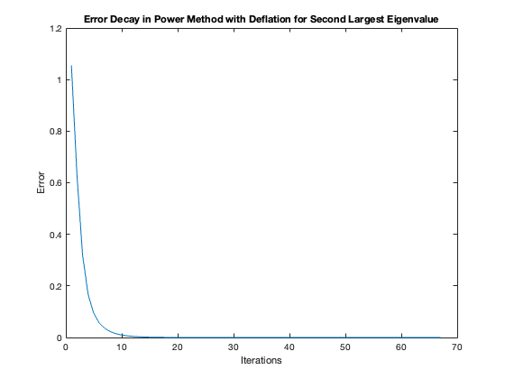

Problem 1
Contents
(a)
Define matrix size and eigenvals
n = 100; l = 1 ./ (1:n); % Eigenvals, 1/k % Generate matrices Lambda = diag(l); % Diagonal lambda wl eigenvals [Q, ~] = qr(randn(n)); % Orthogonal Q A = Q * Lambda * Q'; % Symmetric A % Verify eigen values eval = eig(A); eval = sort(eval, 'descend'); true_eval = l'; max_error = max(abs(eval - true_eval)); fprintf('Maximum absolute error in eigenvalues: %e\n', max_error);
Maximum absolute error in eigenvalues: 1.387779e-15
(b)
Initial guess
v = randn(n,1); v = v / norm(v); true_lead_evec = Q(:, 1); tol = 1e-12; errors = []; k = 0; max_iter = 2000; while k <= 1000 k = k + 1; v = A * v; v = v / norm(v); if dot(v, true_lead_evec) < 0 v = -v; end % Calculate Euclidean norm error error_k = norm(v - true_lead_evec); errors = [errors, error_k]; % Check tolerance if error_k < tol break; end end % Plotting the error against the iteration figure; plot(1:k, errors, 'LineWidth', 1); xlabel('Iterations'); ylabel('Error'); title('Error Decay in Power Method for Largest Eigenvalue');
(c)
Initial guess
v = randn(n,1); v = v / norm(v); true_second_evec = Q(:, 2); errors_deflation = []; k = 0; max_iter = 2000 while k <= max_iter k = k + 1; v = A * v; % Re-orthogonalize v = v - (v' * Q(:, 1)) * Q(:, 1); v = v / norm(v); % Ensure direction consistency if dot(v, true_second_evec) < 0 v = -v; end % Compute error error_k = norm(v - true_second_evec); errors_deflation = [errors_deflation, error_k]; % Check tolerance if error_k < tol break; end end % Plotting figure; plot(1:k, errors_deflation, 'LineWidth', 1); xlabel('Iterations'); ylabel('Error'); title('Error Decay in Power Method with Deflation for Second Largest Eigenvalue');
max_iter =
2000
 (d)
Initial guess
s = 51/1000; v = randn(n,1); v = v / norm(v); true_evec_20 = Q(:, 20); errors_inverse = []; k = 0; max_iter = 2000; while k <= max_iter k = k + 1; % Solve v = (A - s * eye(n)) \ v; v = v / norm(v); % Ensure direction consistency if dot(v, true_evec_20) < 0 v = -v; end % Compute error error_k = norm(v - true_evec_20); errors_inverse = [errors_inverse, error_k]; % Check tolerance if error_k < tol break; end end % Plotting figure; plot(1:k, errors_inverse, 'LineWidth', 1); xlabel('Iteration Number'); ylabel('Error'); title('Error Decay in Inverse Iteration for Eigenvalue Closest to 51/1000');
(e)
Turn off warning
warning('off', 'MATLAB:nearlySingularMatrix'); % Initial guess lambda_rqi = s; v = randn(n, 1); v = v / norm(v); errors_rqi = []; tol = 1e-12; max_iter = 10000; % Maximum iteration limit k = 0; while k < max_iter k = k + 1; % Solve (A - lambda_rqi * I) * v_new = v v = (A - lambda_rqi * eye(n)) \ v; v = v / norm(v); % Ensure direction consistency with true eigenvector of lambda_20 if dot(v, true_evec_20) < 0 v = -v; end % Update lambda using Rayleigh quotient lambda_rqi = v' * A * v; % Compute error with respect to eigenvector of lambda_20 error_k = norm(v - true_evec_20); errors_rqi = [errors_rqi, error_k]; % Check if error tolerance is reached if error_k < tol break; end end % Turn warning back on warning('on', 'MATLAB:nearlySingularMatrix'); % Plotting figure; plot(1:k, errors_rqi, 'LineWidth', 1); xlabel('Iteration Number'); ylabel('Error'); title('Error Decay in Rayleigh Quotient Iteration for Eigenvalue Closest to 51/1000');
Problem 2b
% Add maximum iteration max_iter = 100; % Run rqi [evals, evecs] = rqi_deflation(A, tol, max_iter); % Sort computed and true eigenvalues evals = sort(evals, 'descend'); true_evals = sort(l, 'descend'); % Compute absolute error absolute_errors = abs(evals - true_evals); % Plotting figure; plot(1:n, absolute_errors, 'o-'); xlabel('Eigenvalue Index'); ylabel('Absolute Error'); title('Absolute Error of Computed Eigenvalues');
Problem 4b
Setup
tol = 1e-12; max_iter = 1000; n = 1000; % Generate first SPD with evals in [1, 4] lambda1 = 1 + (4 - 1) * rand(n, 1); % Evals [1,4[ D1 = diag(lambda1); % Eval matrix [Q1, ~] = qr(randn(n)); % Orthogonal A1 = Q1 * D1 * Q1'; % A1 % Generate second SPD with evals in [1, 100] lambda2 = 1 + (100 - 1) * rand(n, 1); D2 = diag(lambda2); [Q2, ~] = qr(randn(n)); A2 = Q2 * D2 * Q2'; % Vector b b = randn(n, 1); b = b / norm(b); x0 = zeros(n, 1); % Solve Ax = b using cg [x1, errors1] = mycg(A1, b, x0, tol, max_iter); [x2, errors2] = mycg(A2, b, x0, tol, max_iter); % Plotting A1 figure; semilogy(1:length(errors1), errors1, 'LineWidth', 1); xlabel('Iteration'); ylabel('Error ||e_k||_A'); title('Conjugate Gradient Error for Matrix A1 (Evals [1, 4])'); % Plotting A2 figure; semilogy(1:length(errors2), errors2, 'LineWidth', 1); xlabel('Iteration'); ylabel('Error ||e_k||_A'); title('Conjugate Gradient Error for Matrix A2 (Evals [1, 100])');